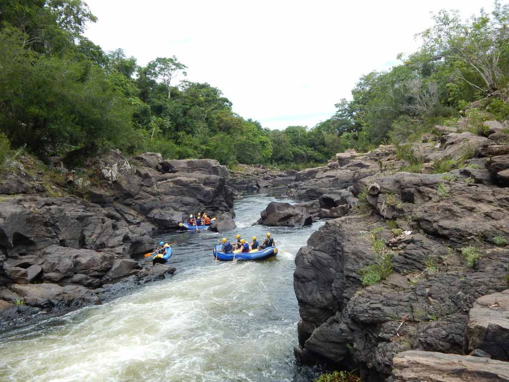
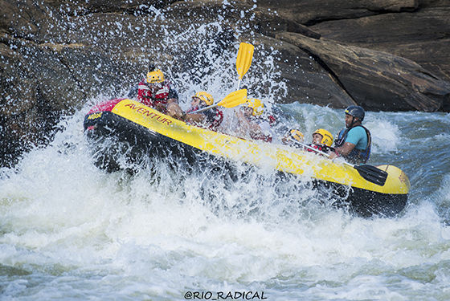
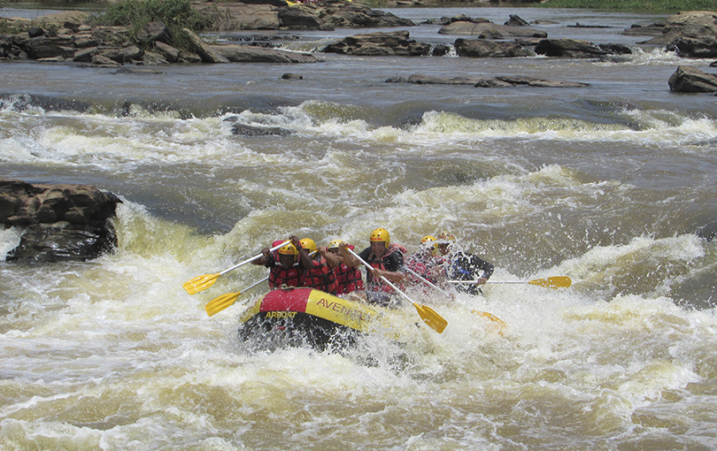
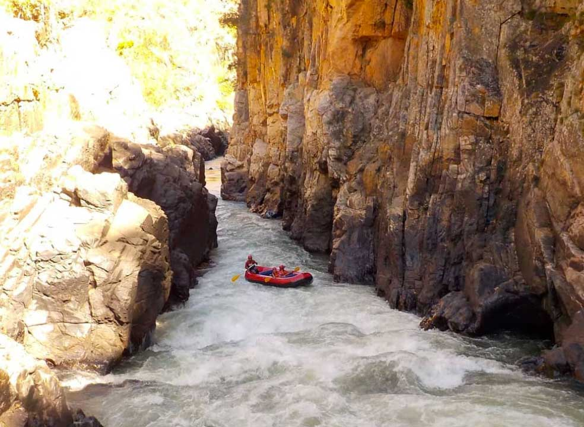
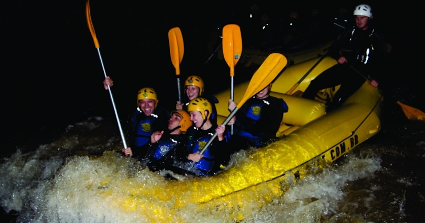

** Peixe River **
Our rafting on the Rio do Peixe has two routes, the family rafting (4km) and the adventure rafting (7km). The activity strictly follows international protocols and everything is done very safely, without losing the main meaning that is fun. The 4km rafting is carried out throughout the year and the 7km rafting depends on the river level and the volume of rainfall for it to occur.
** Contas River **
The Contas river rises in the Chapada Diamatina area and runs 620 km until it flows into Concha beach, in Itacaré (BA). It has rapids from level III to IV and through a small canyon. The guides also usually stop at places where you can jump off rocks to dive into the river.
** Paraibuna River **
Our river is considered one of the best in Brazil for practicing the sport, as it has a large volume of water and does not depend on rain to have a good level of rafting. It has class 2 and 3 rapids and allows the practice of the sport throughout the year.
** Paraibuna do Sul River **
This activity is a new Rafting route, on a very voluminous river that has great class 3 and 4 rapids. It is ideal for people who have practiced the sport before and are looking for a more radical challenge. It is considered the strongest river in Brazil for the practice of Rafting.
** Tocantinzinho River **
Rafting on the Tocantinzinho River, in Chapada dos Veadeiros (GO), guarantees a view marked by clear waters and rock formations. During the dry season, from May to November, rafting passes through a canyon, a high point of activity in Chapada. In addition, there are options for itineraries on other rivers in the region. The cool thing is that there are options for all tastes, from two-hour journeys to multi-day expeditions.
** Jacaré Pepira River **
Jacaré Pepira River is one of the most exciting rivers in Brazil, with 14 rapids class II to IV, in a course of 8 km of river. In this activity, participants will go down the Jacaré Pepira river containing rapids and falls ranging from 03 to 04 meters. The Night Rafting is carried out on full moon nights.